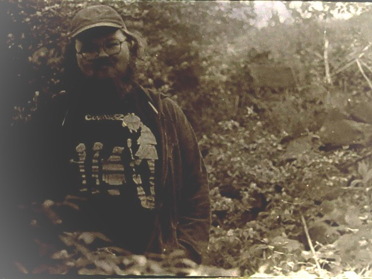

copywriting and engagement specialist; B.A. in elementary education, M.Ed. in learning design and technology; Governor's School for the Arts alum in drama; NSDA, KESDA, and KHSSL state champ; dad x2; anti-racist; fan of good books, chunky board games, and loud music
At work, expect me to bring an abundance of joy and whimsy to my coworkers, to ask the tough questions, and to take a critical eye to everything (especially if it's something everyone else takes for granted). At home, you can usually find me cooking dinner for the family or tackling a messy creative project (like my news and mutual aid site Frontporch). Reach out if you're interested in getting into some good trouble.
